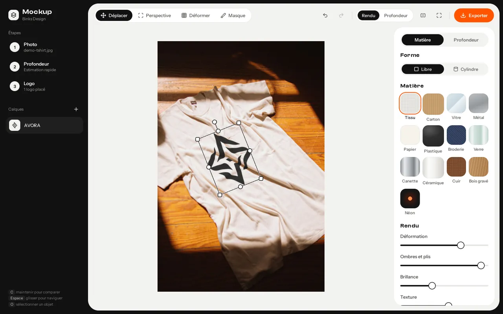
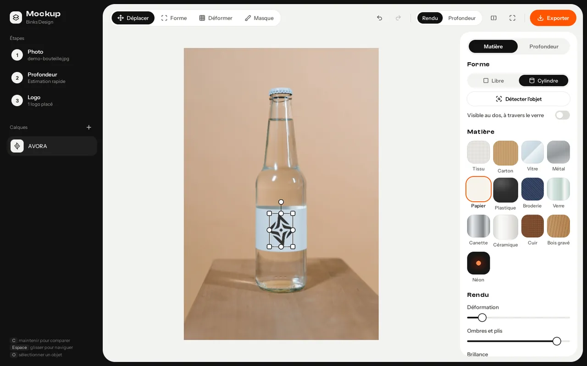
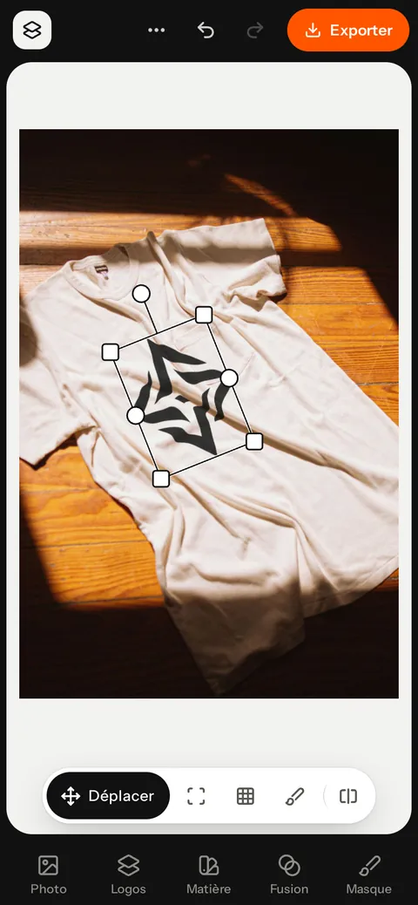
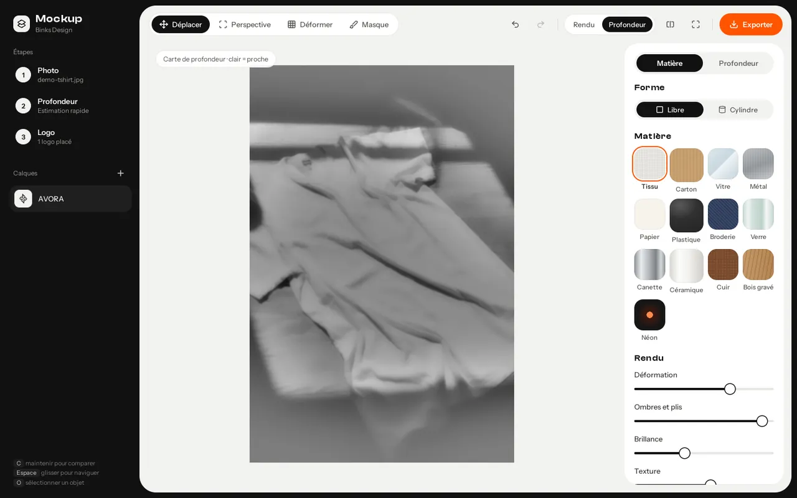
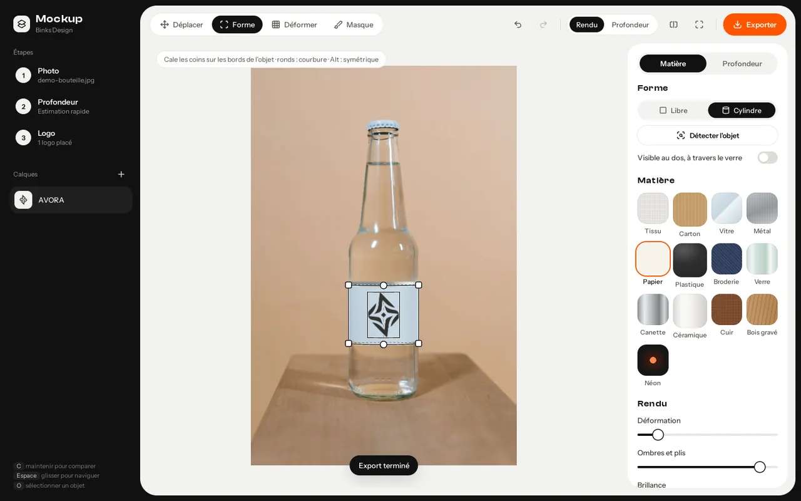
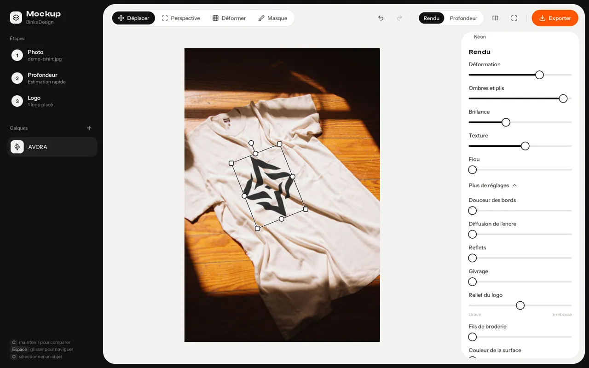
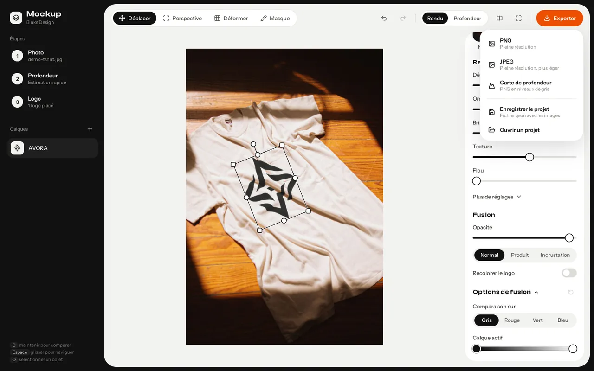
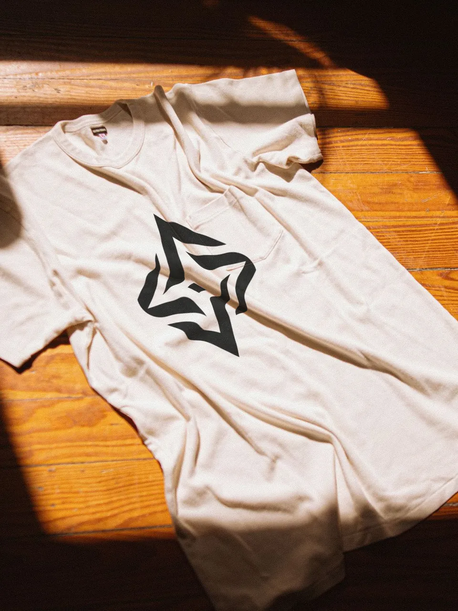
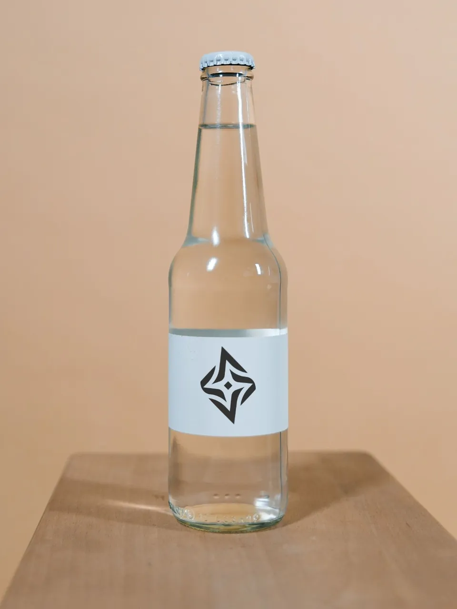
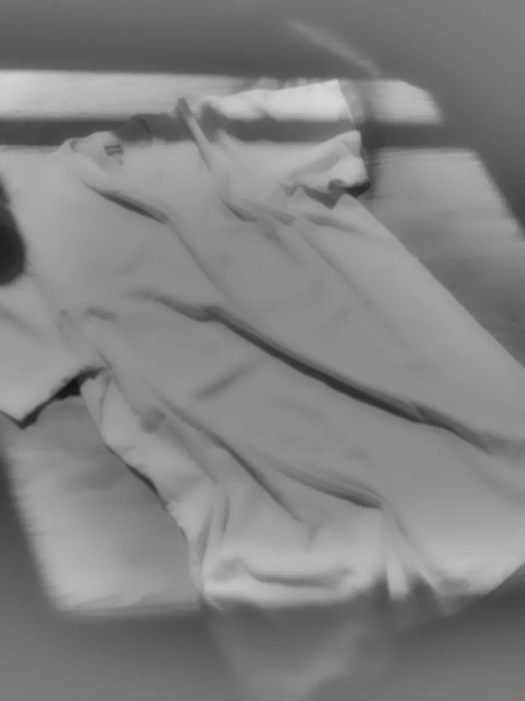

Pour les graphistes · gratuit, sans compte, ta photo reste dans ton navigateur
Ta photo, ton logo, un mockup.
Dépose une photo — t-shirt, bouteille, canette, boîte, vitre — puis ton logo en PNG ou SVG. Une IA de profondeur tourne dans ton navigateur : le logo épouse les plis, la perspective et la lumière de la photo. Tu exportes en PNG pleine résolution.
Démos t-shirt et bouteille intégréesLire la documentation



- 13matières, du tissu au néon
- 4outils : déplacer, perspective, déformer, masque
- 2formes : libre ou cylindre
- 0photo envoyée sur un serveur
Quatre étapes,un mockup.
Pas de compte, pas d’installation, pas de PSD à objets dynamiques : tout se passe dans une seule page, sur ta propre photo.
Importe ta photo
Glisse-la dans la page ou choisis-la. N’importe quelle surface : tissu, carton, verre, métal, vitre… Ou lance la démo t-shirt ou bouteille.
La profondeur se calcule
Depth Anything V2 lit le relief de la photo, sur ta machine. Le modèle se télécharge une seule fois puis reste en cache.
Pose et règle ton logo
Déplace, cale la perspective, courbe-le, choisis la matière, peins le masque. Plusieurs logos possibles, chacun sur son calque.
Exporte
PNG pleine résolution, JPEG plus léger, la carte de profondeur, ou le projet complet en .json pour le reprendre plus tard.
La photo décide,le logo suit.
La carte de profondeur sert à courber le logo dans les plis et à le cacher derrière ce qui passe devant. Les ombres, la brillance et le grain viennent de ta photo, pas d’un filtre plaqué.

Vue Rendu 
Forme cylindre 
Réglages et fusion 
Menu Exporter
- 01Déformation — le logo suit le relief
- 02Ombres et plis repris de la photo
- 03Brillance et texture de la surface
- 04Flou — à 0, le logo reste parfaitement net
- 05Reflets, givrage, diffusion de l’encre
- 06Relief du logo, de gravé à embossé
- 07Fusion — Normal, Produit, Incrustation
- 08Recolorer le logo, options de fusion
téléchargements/ ├─ photo-mockup.png PNG ├─ photo-mockup.jpg JPEG ├─ photo-profondeur.png carte └─ photo.mockup.json projet
Treize matières,à ajuster.
Chaque matière règle les curseurs pour toi ; tu ajustes ensuite. Double-clic sur un curseur pour revenir à la valeur de la matière.
Tissutissu
Le logo plonge dans les plis, prend les ombres et la trame du tissu.
Cartoncarton
Texture marquée, peu de brillance : la boîte et l’emballage kraft.
Vitrevitre
Reflets et givrage, pour une vitre ou une vitrine.
Métalmetal
Forte brillance, logo gravé, teinte reprise de la surface.
Papierpapier
Texture fine et mate : étiquette, affiche, papeterie.
Plastiqueplastique
Brillance au maximum, peu de texture : objets lisses.
Broderiebroderie
Fils de broderie et relief embossé sur le textile.
Verrecylindreverre
Transparence du verre, pensé pour la forme Cylindre.
Canettecylindrecanette
Métal très brillant qui s’enroule autour de la canette.
Céramiquecylindreceramique
Émail brillant pour les tasses et les mugs.
Cuircuir
Gravé dans la matière, en mode Produit.
Bois gravébois
Gravure poussée dans la matière, en mode Produit.
Néonneon
Une lueur autour du logo, comme un tube allumé.
Quatre outils,zéro calque PSD.
Le logo que tu fournis fait foi : l’app ne le redessine pas, elle le pose sur la photo.
- Déplacer · V
Placer
Glisse, redimensionne et pivote le logo.
- Poignées de coin et de bord
- Rotation (Maj : par pas de 15°)
- Flèches pour ajuster au pixel
- Perspective · P
Caler les 4 coins
Pour une boîte, une affiche, une vitre vue de biais.
- Coins libres
- Épouser la surface : inclinaison selon la profondeur
- Déformer · D
Courber
Une grille de points pour plier le logo à la main.
- Grille de 4 × 4 points
- Réinitialiser la déformation
- Masque · M
Passer derrière
Ce qui est devant le logo le cache.
- Pinceau Effacer / Restaurer
- Sélection d’objet en un clic (O)
- Masque automatique par la profondeur
Forme Cylindre : pour les bouteilles, canettes et tasses. Tu cales un cadre sur l’objet (ou tu cliques dessus pour qu’il se cale tout seul), le logo s’enroule autour et peut rester visible au dos, à travers le verre.

TissuDémo t-shirt BroderieDémo t-shirt 
PapierDémo bouteille 
CarteProfondeur exportée
Ta photo restechez toi.
Les visuels de ton client restent chez toi : l’IA, le rendu et l’export tournent dans le navigateur.
Aucun compte, aucune clé
Pas d’inscription, pas d’API payante, pas de traceur. Ton navigateur ne retient que deux préférences d’affichage, rien de ton travail.
IA sur ta machine
Les modèles de profondeur et de sélection d’objet sont téléchargés une fois (Hugging Face) puis tournent en local, en WebGPU ou sur le processeur. Ta photo n’est jamais envoyée.
Ton projet, ton fichier
Rien n’est gardé en ligne ni sauvegardé tout seul : enregistre le projet en .json (Ctrl / ⌘ S) pour le rouvrir plus tard.
Pilotablepar un agent.
Claude Code, Codex ou tout agent qui pilote un navigateur peut produire le mockup à ta place, par l’interface : l’app n’a pas d’API dédiée, mais des identifiants stables sur toutes les commandes.
- Champs de fichiers, boutons et curseurs avec des
idet desdata-*stables, documentés. - Aucune clé API : l’agent travaille dans la page, les exports arrivent en téléchargement.
- Règle d’or : l’agent n’invente jamais de logo et ne le redessine pas.
page.goto('http://127.0.0.1:8000/app.html')
page.set_input_files('#fPhoto', 'photo-client.jpg')
page.wait_for_function("!__mockup.S.depthBusy &&
__mockup.S.depthSource !== 'none'", timeout=300_000)
page.set_input_files('#fLogo', 'logo-client.svg')
page.click('#chips [data-p="broderie"]')
page.click('#exportBtn')
with page.expect_download() as d:
page.click('#exportPop [data-x="png"]')
d.value.save_as('photo-client-mockup.png')Trois façonsde commencer.
Il te faut un navigateur récent qui gère WebGL2, et une connexion la première fois pour charger l’IA.
- Avec ta photo
Ouvrir l’app
Dépose ta photo, puis ton logo en PNG ou SVG, et règle la matière.
Ouvrir l’app - Pour voir le résultat
Les démos
Dans l’app, « Démo t-shirt » ou « Démo bouteille » : photo et logo AVORA déjà posés.
Essayer une démo - Avant de commencer
Le mode d’emploi
Matières, outils, masque, cylindre, raccourcis clavier, export : tout est expliqué.
Documentation